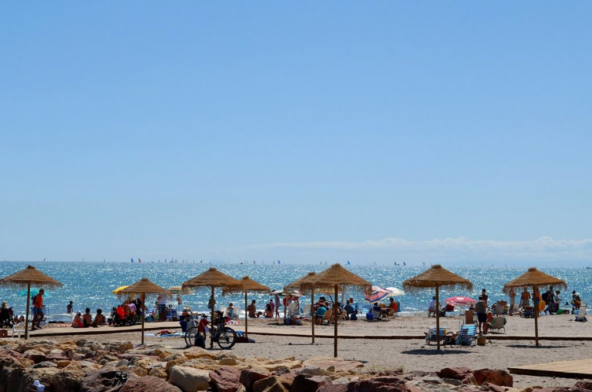
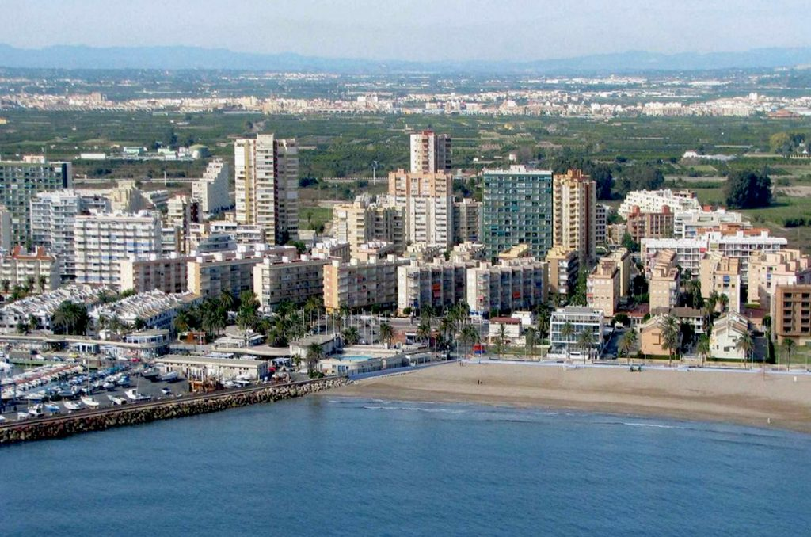
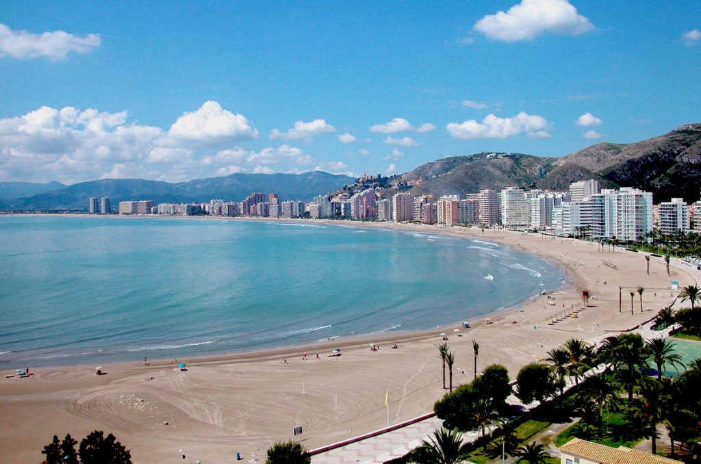
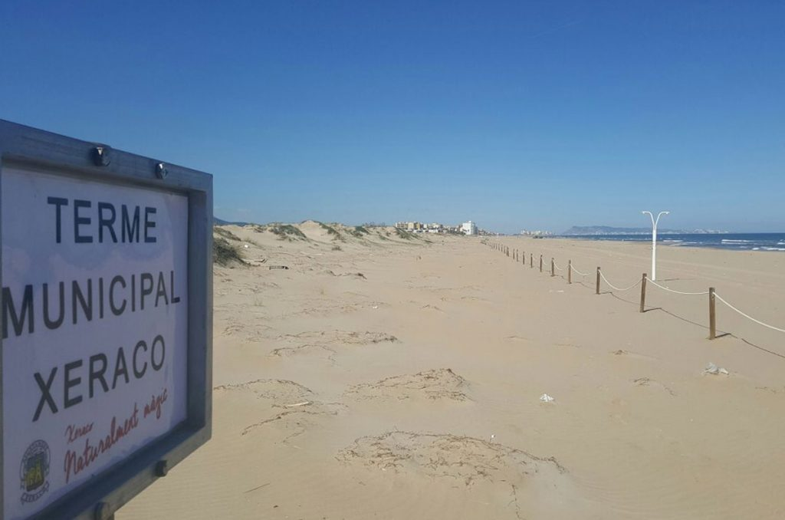
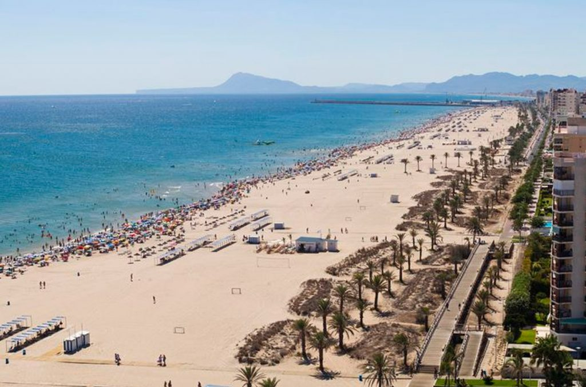
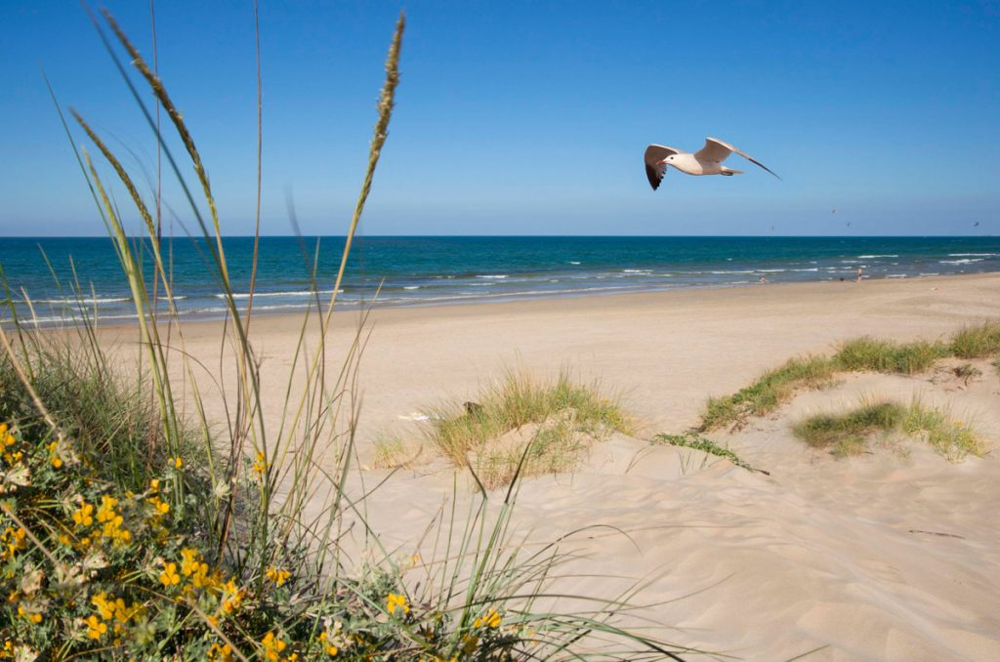
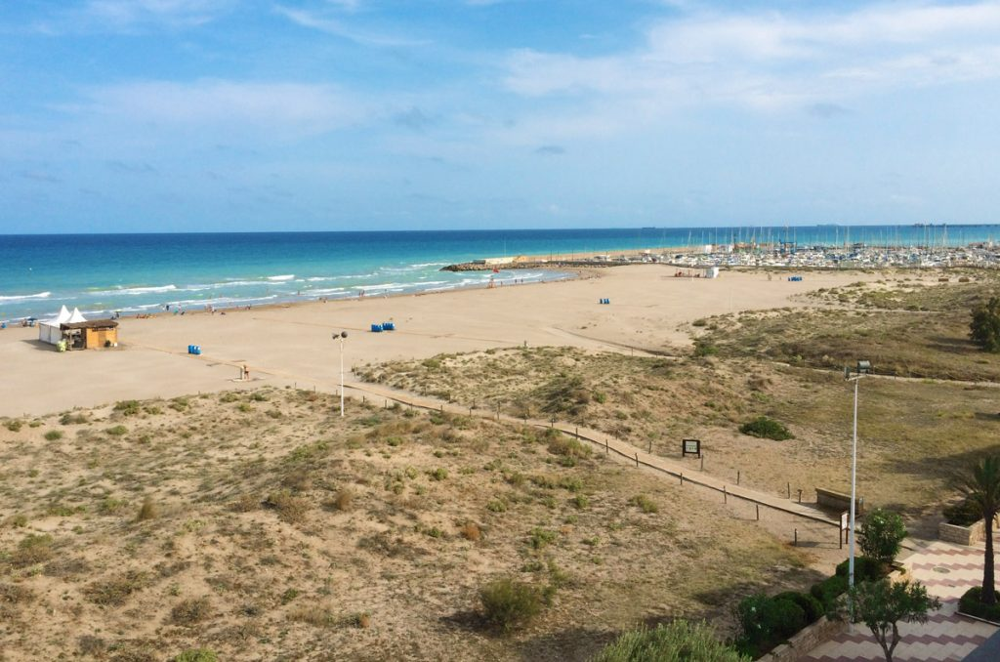
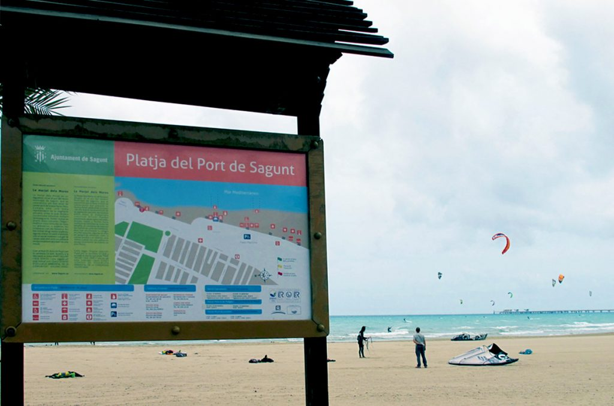

Turismo en la Costa de Valencia
 La Costa de Valencia es el nombre aplicado al litoral de la provincia de Valencia, entre Castellón y Alicante. Con más de 5 millones de visitantes al año,
la región se ha convertido en una referencia para el turismo mundial.
Cuenta, como abanderada, con la mega urbe moderna y cosmopolita ciudad de Valencia, pero también con rincones bellísimos como Xàtiva, Requena, Cullera,
Gandía, Sagunto. Tanto en la ciudad como en sus pequeños y encantadores pueblos, la oferta de ocio y entretenimiento en la Costa de Valencia en enorme.
La Costa de Valencia es el nombre aplicado al litoral de la provincia de Valencia, entre Castellón y Alicante. Con más de 5 millones de visitantes al año,
la región se ha convertido en una referencia para el turismo mundial.
Cuenta, como abanderada, con la mega urbe moderna y cosmopolita ciudad de Valencia, pero también con rincones bellísimos como Xàtiva, Requena, Cullera,
Gandía, Sagunto. Tanto en la ciudad como en sus pequeños y encantadores pueblos, la oferta de ocio y entretenimiento en la Costa de Valencia en enorme.
Entre el litoral y la montaña la Costa de Valencia es una tierra de contrastes con bellísimos parajes naturales. Playas kilométricas de arena y dunas de
gran belleza y valor medioambiental, pequeñas calas recónditas, el parque Natural de l’Albufera o el Jardín del Turia “ el pulmón de Valencia” son algunas
de las zonas que forman un entramado natural de gran riqueza biológica y medioambiental.

Cultura y tradiciones en la Costa de Valencia
 La Costa Valenciana es una región monumental y respira historia por cada rincón. Cuenta con un amplísimo patrimonio cultural donde destacan edificios históricos, como las Torres Serranos y
las de Quart en la capital, o impresionantes castillos medievales como el Castillo de Cullera, el castillo de Sagunto, el Castillo de Xàtiva, murallas, palacetes y casas señoriales repartidos
por todo el territorio junto a la huella dejada por varias civilizaciones que han pasado por estas tierras.
La Costa Valenciana es una región monumental y respira historia por cada rincón. Cuenta con un amplísimo patrimonio cultural donde destacan edificios históricos, como las Torres Serranos y
las de Quart en la capital, o impresionantes castillos medievales como el Castillo de Cullera, el castillo de Sagunto, el Castillo de Xàtiva, murallas, palacetes y casas señoriales repartidos
por todo el territorio junto a la huella dejada por varias civilizaciones que han pasado por estas tierras.
La región ha sabido mantener un equilibrio entre su historia y la modernidad, su principal estandarte es la ciudad de Valencia. Por un lado ofrece un majestuoso casco antiguo
repleto de edificios, torres, castillos y museos, pero a la vez podremos disfrutar de las maravillas de la ciudad de las Artes y las ciencias, el Oceanográfico o el Hemisférico,
el planetario más grande de España o el Bioparc, unos de los zoológicos más grandes de Europa .

Además, la costa de valencia cuenta con un amplísimo calendario de fiestas y tradiciones populares celebradas a lo largo de todo el año. En cada municipio los valencianos viven con
especial intensidad sus fiestas, que son multitudinarias y de gran belleza visual. La fiesta de moros y cristianos, las Fallas, La Virgen del Carmen o la Semana Santa son algunas
de las celebraciones más importantes donde el colorido, las cabalgatas, la música, el fuego y por supuesto, la pólvora son elementos fundamentales durante estos festejos.

Ir al indice
Turismo activo en la Costa de Valencia
Si aparte de tumbarte al sol también te gusta moverte, practicar deporte, senderismo, ciclismo, kayak, rafting, golf, aquí encontrarás oportunidades para practicarlos,
cada vez hay un mayor número de empresas dedicadas al turismo activo.
Valencia es el lugar perfecto si te gustan los deportes náuticos, en sus puertos podrás alquilar veleros, practicar deportes como vela, submarinismo, sky acuático,
pesca deportiva y por supuesto, un sinfín de actividades relacionadas con el mar.
Mire y descargue nuestra guia de turismo aqui.
Ir al indice
Playas de la costa de Valencia

La costa de la provincia de Valencia está bañada por las tranquilas aguas mediterraneas. Conocida a nivel internacional por su bondadoso clima, de temperaturas suaves y muchas hora
de sol, así como por su gastronomía, arquitectura mediterranea y sus parajes naturales como la Albufera.
Las playas de Valencia son en su mayoría de arena dorada y fina, y sus aguas son tranquilas, sin grandes corrientes. Muchas de ellas se encuentran en zona urbana.
Dotadas de servicios, tienen numerosas banderas azules. Destaca el nivel de estos sobre todo por la accesibilidad y comodidad que ofrecen. No es casualidad que la
Comunitat Valenciana haya obtenido el mayor número de banderas azules en la suma de playas y puertos deportivos de toda España.
La playa más conocida es la urbana playa de La Malvarrosa, en el paseo marítimo de la ciudad de Valencia. Junto a ella, la playa de La Patacona, en el término municipal de Alboraya,
resulta un encantador lugar para disfrutar de los días soleados todo el año.
La capital del Turia ofrece una amplia oferta turística, que reune espacios tradicionales como la ciutat vella y modernos y espectaculares como la Ciutat de les Arts i les Ciències,
con recintos muy reconocidos del arquitecto Santiago Calatrava. Además, ofrece una amplia gastronomía mediterranea donde la estrella es el arroz. Cuna de la famosa paella,
y otros platos como la fideuà, arroz al horno, etc. con mención especial a las naranjas, y un refresco tradicional de la zona, la dulce horchata de chufa.
En cuanto al resto de la provincia,abundan los extensos arenales, como los de Cullera, Gandía, Miramar, Canet d’en Berenguer y Sueca. Muchas son especialmente recomendadas para el
turismo familiar, como el litoral de Oliva. Además disponen de toda clase de servicios a pie de playa y una amplia oferta turística que va desde la propuesta urbana de Valencia,
con su Ciudad de las Artes y las Ciencias y su casco antiguo de arquitectura gótica, al patrimonio romano de la ciudad de Sagunto.
Los humedales, con sus plantaciones de arroz, y los naranjos forman un paisaje típico de la zona y contrasta con sus playas. Un buen ejemplo de humedal es el Parque Natural de la
Albufera. También destacan las marismas como las de Puig y Xeraco.
Ir al indice
PuÇol/Puzol y el Puig de Santa Maria 
De norte a sur, la primera localidad que nos encontramos es Puzol con 2 kilómetros de costa, su playa tiene todo el equipamiento necesario para el disfrute
familiar. A continuación, el Puig de Santa María, tiene una longitud de 4 kilómetros, dotados tambien de todos los servicios de playa, además de ser Bandera Azul, Q calidad turistica
y la ISO 14001 de calidad ambiental.
Ir al indice
La Pobla de Farnals 
La Pobla de Farnals gozar de playas con Bandera Azul, Q qualitat, Qualitur, ISO 17001 de accesibilidad universal, ISO 14001 ambiental y la 9001 de calidad.
Cuenta con un club nautico y puerto deportivo que divide la costa en dos playas. La playa de la Pobla de Farnals es una zona vacacional con mucha tradición en Valencia.
Ir al indice
Cullera 
En medio de la provincia de Valencia, se encuentra la costera localidad de Cullera, entre el mar y la montaña.
La ciudad auna un buen corservado casco histórico con una primera línea de playa moderna y muy turística. En Cullera se puede disfrutar todo el año con sus actividades de ocio
y tiempo libre, así como de su cultura y gastronomía.
Ir al indice
Xeraco / Jaraco 
Con una extensión es de 2.620 metros de costa, el municipio de Xeraco dispone de una completa oferta turística que no se limita exclusivamente a su excelente playa, una de las
más importantes de la provincia de Valencia y que, desde 1988 recibe cada año la Bandera Azul Europea.
Ir al indice
Gandia 
Gandia cuenta con más de 5 kilómetros de costa y más de 500.000m2 de fina arena donde tomar el sol. La playa y el paseo se integran para configurar un
espacio muy atractivo para el visitante durante todo el año.Gandia es un destino turístico que combina playa con espacios naturales y de montaña; ocio con cultura, historia y
comercio; una variada oferta lúdica con el descanso y la tranquilidad.
Ir al indice
Oliva 
Oliva está ubicada en un lugar privilegiado del Mediterráneo con numerosas y espléndidas playas de arena fina y dorada, de aguas poco profundas que se extienden a lo largo
de 8 ́5 km y se conocen en toda Europa por su naturalidad, belleza y calidad inigualables. Características que, unidas al cálido clima y a una amplia oferta de servicios,
hacen de las playas de Oliva un destino preferente para disfrutar de las vacaciones en cualquier época del año.
Ir al indice
Canet d’en Berenguer
1.250 metros de costa
por 80 metros de anchura componen la playa de Canet. Se trata de una de las playas más espectaculares de la Comunidad Valenciana
ya que cuenta con todos los alicientes que una playa necesita. Por un lado, su arena es fina y suave y por otro, a través de sus aguas cristalinas se puede ver el fondo del mar
con claridad.
Ir al indice
Sagunto
Famosa por su patrimonio histórico como el Teatro Romano, a poca distancia de la ciudad se encuentra la playa del Puerto de Sagunto. Es de arena fina, y el puerto le sirve de
contención de los vientos del sur. En su entorno posee una zona de dunas firmemente fijadas por vegetación y cañaverales. Cuenta con numerosos servicios para personas con movilidad
reducida así como para el surf en el verano.
Ir al indice
https://tripkay.com/destination-guides/destino/costas-espanolas/costa-de-valencia/
https://www.iberiaplayas.es/playas-comunidad-valenciana/